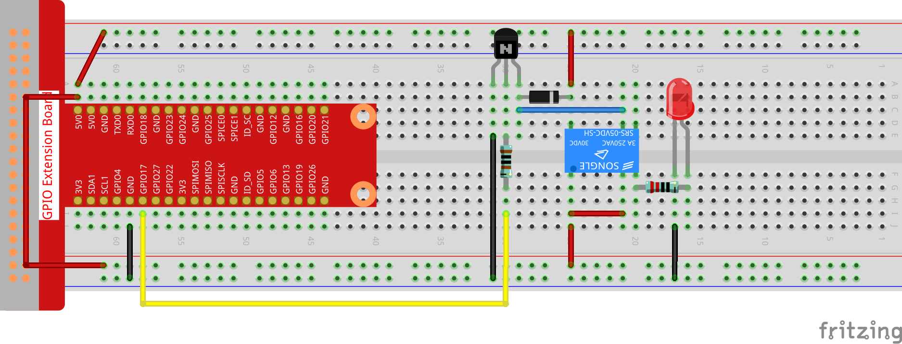

Nota
Ciao, benvenuto nella community SunFounder Raspberry Pi & Arduino & ESP32 Enthusiasts su Facebook! Approfondisci le tue conoscenze su Raspberry Pi, Arduino e ESP32 con altri appassionati.
Perché unirti a noi?
Supporto esperto: Risolvi problemi post-vendita e sfide tecniche con l’aiuto della nostra community e del nostro team.
Impara e condividi: Scambia consigli e tutorial per migliorare le tue competenze.
Anteprime esclusive: Ottieni accesso anticipato a nuovi annunci di prodotti e anteprime.
Sconti speciali: Approfitta di sconti esclusivi sui nostri prodotti più recenti.
Promozioni festive e omaggi: Partecipa a giveaway e promozioni festive.
👉 Pronto a esplorare e creare con noi? Clicca [Qui] e unisciti oggi stesso!
1.3.4 Relè
Introduzione
In questa lezione, impareremo a utilizzare un relè. È uno dei componenti comunemente utilizzati nei sistemi di controllo automatico. Quando la tensione, la corrente, la temperatura, la pressione, ecc., raggiungono, superano o sono inferiori al valore prestabilito, il relè collega o interrompe il circuito per controllare e proteggere l’apparecchiatura.
Componenti

Principio
Diodo
Un diodo è un componente elettronico a due terminali con un flusso di corrente unidirezionale. Offre bassa resistenza nella direzione del flusso di corrente e alta resistenza nella direzione opposta. I diodi sono utilizzati principalmente per prevenire danni ai componenti, in particolare dovuti alla forza elettromotrice nei circuiti solitamente polarizzati.

I due terminali di un diodo sono polarizzati, con l’estremità positiva chiamata anodo e l’estremità negativa chiamata catodo. Il catodo è generalmente di colore argentato o presenta una banda colorata. Il flusso di corrente in un diodo va dall’anodo al catodo. Il comportamento di un diodo è simile a quello di una valvola di non ritorno. Una delle caratteristiche più importanti di un diodo è la curva corrente-tensione non lineare.
Relè
Un relè è un dispositivo che consente di stabilire una connessione tra due o più punti in risposta al segnale di ingresso. In altre parole, i relè forniscono isolamento tra il controller e il dispositivo, poiché i dispositivi possono funzionare sia in corrente alternata (AC) che continua (DC). Tuttavia, ricevono segnali da un microcontrollore che opera in DC, quindi è necessario un relè per colmare il divario. Il relè è estremamente utile quando è necessario controllare una grande quantità di corrente o tensione con un piccolo segnale elettrico.
Ci sono 5 parti in ogni relè:
Elettromagnete - Costituito da un nucleo di ferro avvolto da una bobina di fili. Quando l’elettricità passa, diventa magnetico e si chiama elettromagnete.
Armatura - Striscia magnetica mobile nota come armatura. Quando la corrente fluisce, la bobina si energizza, producendo un campo magnetico che attiva o disattiva i contatti aperti (N/O) o chiusi (N/C).
Molla - Quando nessuna corrente passa attraverso la bobina, la molla tira l’armatura via, interrompendo il circuito.
Set di contatti elettrici - Ci sono due punti di contatto:
Normalmente aperto - connesso quando il relè è attivato, disconnesso quando è inattivo.
Normalmente chiuso - non connesso quando il relè è attivato, connesso quando è inattivo.
Struttura in plastica - I relè sono rivestiti di plastica per la protezione.
Funzionamento del Relè
Il principio di funzionamento del relè è semplice. Quando viene alimentato, la corrente inizia a fluire attraverso la bobina di controllo, energizzando l’elettromagnete. L’armatura viene quindi attratta verso la bobina, connettendo i contatti aperti e chiudendo il circuito. Per interrompere il circuito, l’armatura viene sollevata dai contatti chiusi grazie alla molla. In questo modo, l’accensione e lo spegnimento del relè possono controllare lo stato di un circuito di carico.

Schema

Procedure Sperimentali
Passo 1: Monta il circuito.
{kind=link}
Passo 2: Apri il file del codice.
cd ~/davinci-kit-for-raspberry-pi/c/1.3.4
Passo 3: Compila il codice.
gcc 1.3.4_Relay.c -lwiringPi
Passo 4: Esegui il file eseguibile.
sudo ./a.out
Dopo l’esecuzione del codice, il LED si accenderà. Inoltre, puoi sentire un ticchettio causato dall’interruzione del contatto normalmente chiuso e dalla chiusura del contatto normalmente aperto.
Nota
Se non funziona dopo l’esecuzione, o appare un messaggio di errore: "wiringPi.h: No such file or directory», consulta la guida Il codice C non funziona?.
Codice
#include <wiringPi.h>
#include <stdio.h>
#define RelayPin 0
int main(void){
if(wiringPiSetup() == -1){ //se l'inizializzazione wiring fallisce, stampa un messaggio a schermo
printf("setup wiringPi failed !");
return 1;
}
pinMode(RelayPin, OUTPUT); //imposta GPIO17(GPIO0) in output
while(1){
// Tick
printf("Relay Open......\n");
delay(100);
digitalWrite(RelayPin, LOW);
delay(1000);
// Tock
printf("......Relay Close\n");
delay(100);
digitalWrite(RelayPin, HIGH);
delay(1000);
}
return 0;
}
Spiegazione del Codice
digitalWrite(RelayPin, LOW);
Imposta la porta I/O a livello basso (0V), disattivando il transistor e non alimentando la bobina. Non c’è forza elettromagnetica, quindi il relè si apre e il LED non si accende.
digitalWrite(RelayPin, HIGH);
Imposta la porta I/O a livello alto (5V) per energizzare il transistor. La bobina del relè viene alimentata, generando forza elettromagnetica, e il relè si chiude, accendendo il LED.